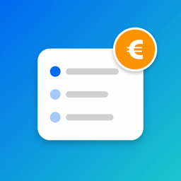

Hilfe & Kontakt
AboWächter hilft dir, den Überblick über deine Abonnements zu behalten: Du siehst, was du im Monat und im Jahr zahlst, wirst vor Verlängerungen und dem Ende von Probezeiten erinnert und findest zu jedem Abo eine Anleitung zum Kündigen.
Du hast eine Frage, einen Fehler gefunden oder eine Idee? Schreib mir gern an ercangedik@live.de.
Häufige Fragen
Wo werden meine Daten gespeichert?
Ausschließlich auf deinem iPhone. Es gibt kein Konto, keine Anmeldung und keine Verbindung zu deiner Bank. Ich kann deine Abos nicht sehen.
Ich habe ein neues iPhone – sind meine Abos weg?
Wenn du dein neues iPhone aus einem Backup deines alten iPhones einrichtest (iCloud-Backup oder über den Mac), sind deine Abos wieder da.
Ich bekomme keine Erinnerungen.
Prüfe in der App unter Einstellungen (Zahnrad oben links), ob bei „Mitteilungen“ „Erlaubt“ steht. Dort kannst du auch eine Test-Erinnerung senden. Achte außerdem darauf, dass beim jeweiligen Abo „An dieses Abo erinnern“ eingeschaltet ist und kein Fokus-Modus Mitteilungen blockiert.
Was kostet AboWächter?
Bis zu 5 Abos kannst du kostenlos verwalten. Mit AboWächter Pro sind es unbegrenzt viele – als einmaliger Kauf, nicht als Abo. Pro lässt sich über die Familienfreigabe teilen.
Ich habe Pro gekauft, aber die App erkennt es nicht.
Öffne in der App die Einstellungen und tippe auf „Kauf wiederherstellen“. Achte darauf, dass du mit derselben Apple-ID angemeldet bist, mit der du gekauft hast.
Kann AboWächter meine Abos für mich kündigen?
Nein. Die App zeigt dir Schritt für Schritt, wo und wie du kündigst, und öffnet die passende Seite. Die Kündigung selbst machst du beim Anbieter, bei Apple oder bei Google.